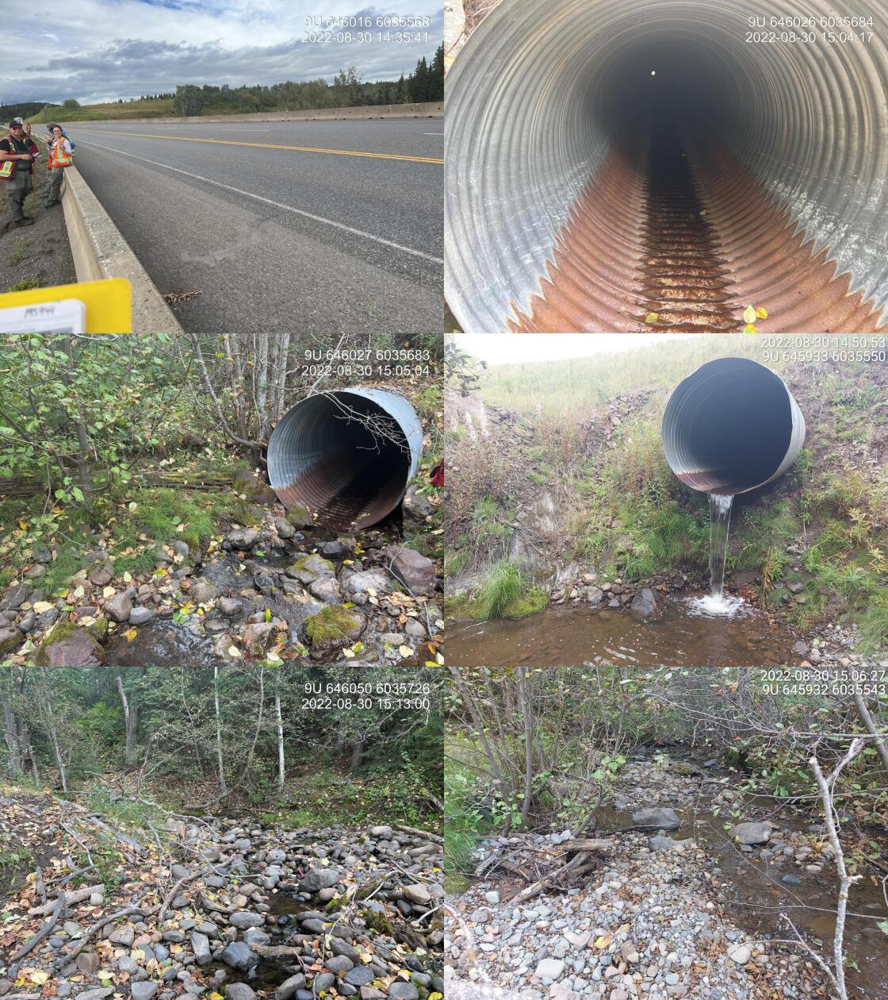
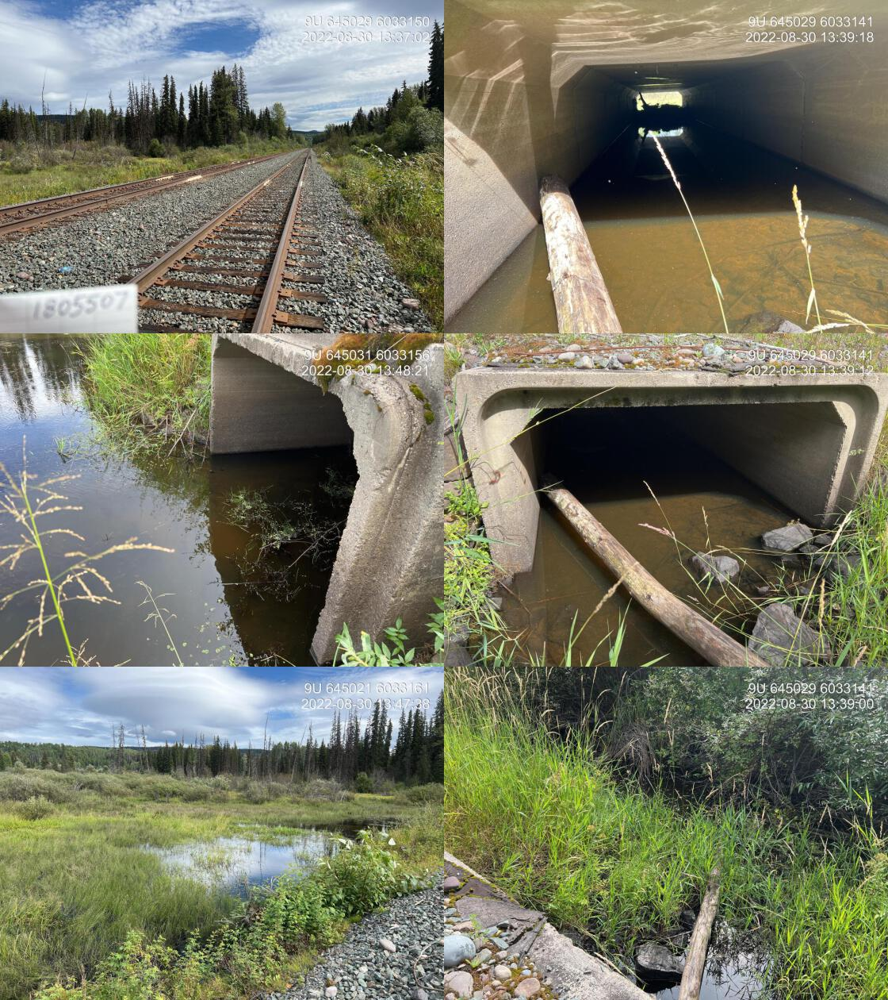

Stock Creek - 195943 - Appendix
Site Location
PSCIS crossing 195943 is located approximately 12km north west of Houston, BC. The site is located on Barrett Station Road, approximately 2.5km upstream from the confluence with the Bulkley River. PSCIS crossing 195944 is located on Highway 16, approximately 850m upstream of crossing 195943. Both crossings are the responsibility of the Ministry of Transportation and Infrastructure.
Background
At crossing 195943, Stock Creek is a third order stream with a watershed area upstream of the crossing of approximately 14.3km2. The elevation of the watershed ranges from a maximum of 1274m to 636m at the crossing (Table 4.1). There is limited fisheries information available for the areas upstream of crossings 195943 and 195944. Harry Bell is the adjacent landowner downstream and upstream of the highway crossing. He reported historical sightings of adult coho and steelhead in Stock Creek. Approximately 2km downstream of crossing 195943, there is a railway crossing that was assessed and found to be fully passable. Coho and chinook salmon have been observed just downstream of the railway crossing in the past (MoE 2020b; Norris 2020).
fpr::fpr_table_wshd_sum(site_id = my_site) %>%
fpr::fpr_kable(caption_text = paste0('Summary of derived upstream watershed statistics for PSCIS crossing ', my_site, '.'),
footnote_text = 'Elev P60 = Elevation at which 60% of the upstream watershed area is above',
scroll = F)| Site | Area Km | Elev Site | Elev Min | Elev Max | Elev Median | Elev P60 | Aspect |
|---|---|---|---|---|---|---|---|
| 195943 | 14.3 | 636 | 681 | 1274 | 923 | 892 | SW |
| * Elev P60 = Elevation at which 60% of the upstream watershed area is above |
At the time of reporting, Dogwood Environmental Consulting (Dogwood) were working on a grazing/fuel reduction pilot project in collaboration with BC Wildfire, the Ministry of Agriculture, and BC Cattleman’s Association. Dogwood worked with grazing lease holders and farmers to identify agricultural areas in need of enhancement. Stock Creek was included in one of these target areas, due to its clear signs of cattle use and grazing, leading to significant impacts on stream habitat. Plans to mitigate these impacts and prevent cattle from accessing stream banks are still ongoing. The project study area was located upstream of the assessed Highway 16 crossing (pers. comm Jenn Atkins, 2022).
PSCIS stream crossing 195943 was ranked as a high priority for follow up by Canadian Wildlife Federation because of significant amounts of habitat modelled as upstream of the crossing. A total of 11ha of lake and 21ha of wetland is modelled upstream and a summary of habitat modelling outputs is presented in Table 4.2. A map of the watershed is provided in map attachment 093L.114.
fpr::fpr_table_bcfp(scroll = gitbook_on) | Habitat | Potential | Remediation Gain | Remediation Gain (%) |
|---|---|---|---|
| ST Network (km) | 23.1 | 0.7 | 3 |
| ST Lake Reservoir (ha) | 10.6 | 0.0 | 0 |
| ST Wetland (ha) | 20.6 | 0.0 | 0 |
| ST Slopeclass03 Waterbodies (km) | 2.0 | 0.0 | 0 |
| ST Slopeclass03 (km) | 3.3 | 0.0 | 0 |
| ST Slopeclass05 (km) | 7.5 | 0.2 | 3 |
| ST Slopeclass08 (km) | 5.7 | 0.5 | 9 |
| ST Spawning (km) | 0.0 | 0.0 | – |
| ST Rearing (km) | 7.9 | 0.7 | 9 |
| CH Spawning (km) | 0.0 | 0.0 | – |
| CH Rearing (km) | 0.0 | 0.0 | – |
| CO Spawning (km) | 0.0 | 0.0 | – |
| CO Rearing (km) | 0.2 | 0.2 | 100 |
| CO Rearing (ha) | – | 0.0 | – |
| SK Spawning (km) | 0.0 | 0.0 | – |
| SK Rearing (km) | 0.0 | 0.0 | – |
| SK Rearing (ha) | – | 0.0 | – |
| All Spawning (km) | 12.0 | 0.7 | 6 |
| All Rearing (km) | 7.9 | 0.7 | 9 |
| All Spawning Rearing (km) | 12.0 | 0.7 | 6 |
| * Model data is preliminary and subject to adjustments. |
Stream Characteristics at Crossings
At the time of the survey, PSCIS crossing 195943 was un-embedded, non-backwatered and ranked as a barrier to upstream fish passage according to the provincial protocol (MoE 2011b) (Table 4.3). The culvert outlet drop was significant at 1.1m. Water temperature was 14\(^\circ\)C, pH was 8.1 and conductivity was 343uS/cm. A beaver dam was noted just upstream of the culvert inlet (~1.5m high).
PSCIS crossing 195944 was un-embedded, non-backwatered and ranked as a barrier to upstream fish passage. The culvert length and fill depth were estimated at 167m and 35m, respectively (Table 4.4).
fpr::fpr_table_cv_summary_memo()| Location and Stream Data |
|
Crossing Characteristics | – |
|---|---|---|---|
| Date | 2022-08-30 | Crossing Sub Type | Oval Culvert |
| PSCIS ID | 195943 | Diameter (m) | 2 |
| External ID | – | Length (m) | 14 |
| Crew | MW, TP, AI, VJ, AN, DN | Embedded | No |
| UTM Zone | 9 | Depth Embedded (m) | – |
| Easting | 645434 | Resemble Channel | No |
| Northing | 6035035 | Backwatered | No |
| Stream | Stock Creek | Percent Backwatered | – |
| Road | Barrett Station Road | Fill Depth (m) | 0.6 |
| Road Tenure | – | Outlet Drop (m) | 1.1 |
| Channel Width (m) | 3 | Outlet Pool Depth (m) | 0.71 |
| Stream Slope (%) | 3 | Inlet Drop | No |
| Beaver Activity | No | Slope (%) | 1.5 |
| Habitat Value | Medium | Valley Fill | Deep Fill |
| Final score | 31 | Barrier Result | Barrier |
| Fix type | – | Fix Span / Diameter | – |
Photos: From top left clockwise: Road/Site Card, Barrel, Outlet, Downstream, Upstream, Inlet.
|
|||
| Comments: Very large outlet drop, but creates nice pool for fish. Erosion on LB/RB on outlet side. Agricultural fields, minimal municipality population ds. Road is paved, detour available. 10:25 |
fpr::fpr_table_cv_summary_memo(site = my_site2, site_photo_id = my_site2)| Location and Stream Data |
|
Crossing Characteristics | – |
|---|---|---|---|
| Date | 2022-08-30 | Crossing Sub Type | Round Culvert |
| PSCIS ID | 195944 | Diameter (m) | 1.8 |
| External ID | – | Length (m) | 99 |
| Crew | MW, TP, AI, VJ, AN, DN | Embedded | No |
| UTM Zone | 9 | Depth Embedded (m) | – |
| Easting | 646015.2 | Resemble Channel | No |
| Northing | 6035570 | Backwatered | No |
| Stream | Stock Creek | Percent Backwatered | – |
| Road | Highway 16 | Fill Depth (m) | 9.99 |
| Road Tenure | MoTi | Outlet Drop (m) | 1.5 |
| Channel Width (m) | 2.6 | Outlet Pool Depth (m) | 0.25 |
| Stream Slope (%) | 2 | Inlet Drop | No |
| Beaver Activity | No | Slope (%) | 3.5 |
| Habitat Value | Medium | Valley Fill | Deep Fill |
| Final score | 42 | Barrier Result | Barrier |
| Fix type | – | Fix Span / Diameter | – |
| Photos: From top left clockwise: Road/Site Card, Barrel, Outlet, Downstream, Upstream, Inlet. | |||
| Comments: Length 167 m. Fill depth estimated at approximately 35 m. 14:35 |
##this is useful to get some comments for the report
hab_site %>% filter(site == my_site & location == 'us') %>% pull(comments)
fpr::fpr_my_priority_info()Stream Characteristics Downstream of 195943
The stream was surveyed downstream from crossing 195943 for 300m . (Figures 4.1 - 4.2). The dominant substrate was gravels with cobbles sub-dominant.Total cover amount was rated as moderate with small woody debris dominant. Cover was also present as .The average channel width was 3.8m, the average wetted width was 1.8m, and the average gradient was 2.7%. There was a pool approximately 180m downstream of the crossing where multiple fish up to 10cm in length were spotted. A footbridge was found 20m past this pool. Concrete slabs were located on both banks upstream of the bridge. The stream had minimal overhanging and riparian vegetation due to farmland. Some areas had built up dams that formed pools. These are likely being used as livestock waterholes. Some garbage and debris was found in and around the stream. The habitat was rated as medium value for salmonid rearing and spawning. There is potential for higher value habitat but there is limited complexity due to adjacent agricultural activities.
Modelled crossing 1805507 located further downstream on the CN Railway was assessed and ranked as passable to all species and life stages at the time of survey. The crossing was embedded and fully backwatered (Table 4.5).
fpr::fpr_table_cv_summary_memo(dat = pscis_phase1, site = 1805507, site_photo_id = 1805507, col_filter = my_crossing_reference)| Location and Stream Data |
|
Crossing Characteristics | – |
|---|---|---|---|
| Date | 2022-08-30 | Crossing Sub Type | Concrete Box |
| PSCIS ID | 198112 | Diameter (m) | 2.5 |
| External ID | 1805507 | Length (m) | 14 |
| Crew | AI, DN, AN | Embedded | Yes |
| UTM Zone | 9 | Depth Embedded (m) | 0.4 |
| Easting | 645034 | Resemble Channel | Yes |
| Northing | 6033148 | Backwatered | Yes |
| Stream | Stock Creek | Percent Backwatered | 100 |
| Road | CN Railway | Fill Depth (m) | 0.5 |
| Road Tenure | CN Rail | Outlet Drop (m) | 0 |
| Channel Width (m) | 2.5 | Outlet Pool Depth (m) | 0.2 |
| Stream Slope (%) | 0 | Inlet Drop | No |
| Beaver Activity | Yes | Slope (%) | 0 |
| Habitat Value | Medium | Valley Fill | Deep Fill |
| Final score | 8 | Barrier Result | Passable |
| Fix type | – | Fix Span / Diameter | – |
| Photos: From top left clockwise: Road/Site Card, Barrel, Outlet, Downstream, Upstream, Inlet. | |||
| Comments: Fully backwatered and embedded concrete box structure on the Railway. Not a fish passage issue at this time. 13:37 |
Stream Characteristics Upstream of 195943 and Downstream of 195944
The stream was surveyed upstream from crossing 195943 for 330m
(Figures 4.3 - 4.4).
Total cover amount was rated as abundant with boulders dominant. Cover was also present as undercut banks.The dominant substrate was cobbles with boulders sub-dominant.The average channel width was 3.1m, the average wetted width was 1.8m, and the average gradient was 2.1%. There was good flow volume and a decent amount of complexity due to boulders and undercut banks. There were small pockets of gravel suitable for resident rainbow as well as coho and steelhead spawning. Occasional shallow pools and traces of large water debris were sighted. The channel appeared to be constricted due to agricultural development on both sides of the stream. Water withdrawal is occurring as well. More agricultural development was encroaching on the riparian farther upstream. The
habitat was rated as medium value as
an important migration corridor containing suitable spawning habitat and
having moderate rearing potential.
The stream was surveyed downstream from crossing 195944 for 300m
(Figures 4.3 - 4.4).
The average channel width was 3.1m, the average wetted width was 1.8m, and the average gradient was 2.1%.The dominant substrate was cobbles with boulders sub-dominant.Total cover amount was rated as abundant with boulders dominant. Cover was also present as undercut banks. There were many undercut banks throughout, with fish up tp 20cm long sighted throughout covered areas. There was a cattle trail next to length of creek, with some areas that showed obvious signs of erosion and an associated risk of sediment falling into stream. There were not many gravel patches suitable for spawning. The
habitat was rated as medium value as
an important migration corridor containing some suitable spawning habitat and
having moderate rearing potential.
Stream Characteristics Upstream of 195944
The stream was surveyed upstream from crossing 195944 for 640m (Figures 4.5 - 4.6). The dominant substrate was boulders with cobbles sub-dominant.Total cover amount was rated as moderate with boulders dominant. Cover was also present as small woody debris and undercut banks.The average channel width was 4.2m, the average wetted width was 1.8m, and the average gradient was 2%. This section of the stream is likely an important migration corridor, however the stream is heavily impacted by cattle activity. There were significant amounts of cattle manure in the stream, which likely affected water quality levels. There were occasional pockets of gravel suitable for resident rainbow spawning. Boulders were the significant cover however there were occasional pools with depths suitable for overwintering. Decent amount of rearing habitat for juveniles though. There was a small rock drop of 65cm located 365m upstream of the top end of the culvert.
Structure Remediation and Cost Estimate
# Should restoration/maintenance activities proceed, replacement of PSCIS
# crossing `r as.character(my_site)` with a bridge
# (`r fpr::fpr_my_pscis_info(col_pull = recommended_diameter_or_span_meters)`m
# span) is recommended. The cost of the work is estimated at
# \$`r format(fpr::fpr_my_cost_estimate(), big.mark = ',')` for a cost
# benefit of `r fpr::fpr_my_cost_estimate(col_pull = cost_net)` linear
# m/\$1000 and `r fpr::fpr_my_cost_estimate(col_pull = cost_area_net)`
# m^2^/\$1000.Conclusion
There was 0.2km of habitat modelled upstream of crossing 195943 rated as medium value for salmonid rearing and spawning. Crossing 195943 was ranked as a high priority for proceeding to design for replacement. Replacement with a new open bottom structure is recommended.
This stream is heavily impacted by adjacent land use and cattle activity. However, the habitat is still moderate to high value and suitable for rearing and overwintering. Resident fish were spotted at the time of survey. It is advised that individuals continue to work with adjacent landowners and tenure holders to carry out stream restoration activities and keep livestock out of the riparian region and streambed.
tab_hab_summary %>%
filter(Site == my_site | Site == my_site2) %>%
# select(-Site) %>%
fpr::fpr_kable(caption_text = paste0('Summary of habitat details for PSCIS crossing ', my_site, ' and ', my_site2, '.'),
scroll = F) | Site | Location | Length Surveyed (m) | Channel Width (m) | Wetted Width (m) | Pool Depth (m) | Gradient (%) | Total Cover | Habitat Value |
|---|---|---|---|---|---|---|---|---|
| 195943 | Downstream | 300 | 3.8 | 1.8 | 0.4 | 2.7 | moderate | medium |
| 195943 | Upstream | 330 | 3.1 | 1.8 | 0.3 | 2.1 | abundant | medium |
| 195944 | Downstream | 300 | 4.1 | 1.5 | 0.3 | 3.2 | trace | medium |
| 195944 | Upstream | 640 | 4.2 | 1.8 | 0.3 | 2.0 | moderate | medium |
my_photo1 = fpr::fpr_photo_pull_by_str(str_to_pull = '_d1_')
my_caption1 = paste0('Habitat downstream of PSCIS crossing ', my_site, '.')grid::grid.raster(jpeg::readJPEG(my_photo1))Figure 4.1: Habitat downstream of PSCIS crossing 195943.
my_photo2 = fpr::fpr_photo_pull_by_str(str_to_pull = '_d2_')
my_caption2 = paste0('Habitat downstream of PSCIS crossing ', my_site, '.')grid::grid.raster(jpeg::readJPEG(my_photo2))Figure 4.2: Habitat downstream of PSCIS crossing 195943.
my_caption <- paste0('Left: ', my_caption1, ' Right: ', my_caption2)
knitr::include_graphics(my_photo1)
knitr::include_graphics("fig/pixel.png")
knitr::include_graphics(my_photo2)my_photo1 = fpr::fpr_photo_pull_by_str(str_to_pull = '_u1_')
my_caption1 = paste0('Habitat upstream of PSCIS crossing ', my_site, '.')grid::grid.raster(jpeg::readJPEG(my_photo1))Figure 4.3: Habitat upstream of PSCIS crossing 195943.
my_photo2 = fpr::fpr_photo_pull_by_str(str_to_pull = '_u2_')
my_caption2 = paste0('Habitat upstream of PSCIS crossing ', my_site, '.')grid::grid.raster(jpeg::readJPEG(my_photo2))Figure 4.4: Habitat upstream of PSCIS crossing 195943.
my_caption <- paste0('Left: ', my_caption1, ' Right: ', my_caption2)
knitr::include_graphics(my_photo1)
knitr::include_graphics("fig/pixel.png")
knitr::include_graphics(my_photo2)my_photo1 = fpr::fpr_photo_pull_by_str(site = my_site2, str_to_pull = '_u1_')
my_caption1 = paste0('Habitat upstream of PSCIS crossing ', my_site2, '.')grid::grid.raster(jpeg::readJPEG(my_photo1))Figure 4.5: Habitat upstream of PSCIS crossing 195944.
my_photo2 = fpr::fpr_photo_pull_by_str(site = my_site2, str_to_pull = '_u2_')
my_caption2 = paste0('Habitat upstream of PSCIS crossing ', my_site2, '.')grid::grid.raster(jpeg::readJPEG(my_photo2))Figure 4.6: Habitat upstream of PSCIS crossing 195944.
my_caption <- paste0('Left: ', my_caption1, ' Right: ', my_caption2)
knitr::include_graphics(my_photo1)
knitr::include_graphics("fig/pixel.png")
knitr::include_graphics(my_photo2)knitr::opts_chunk$set(echo=FALSE, message=FALSE, warning=FALSE)
source('scripts/packages.R')
source('scripts/tables.R')my_site <- 197653
my_site2 <- 197657